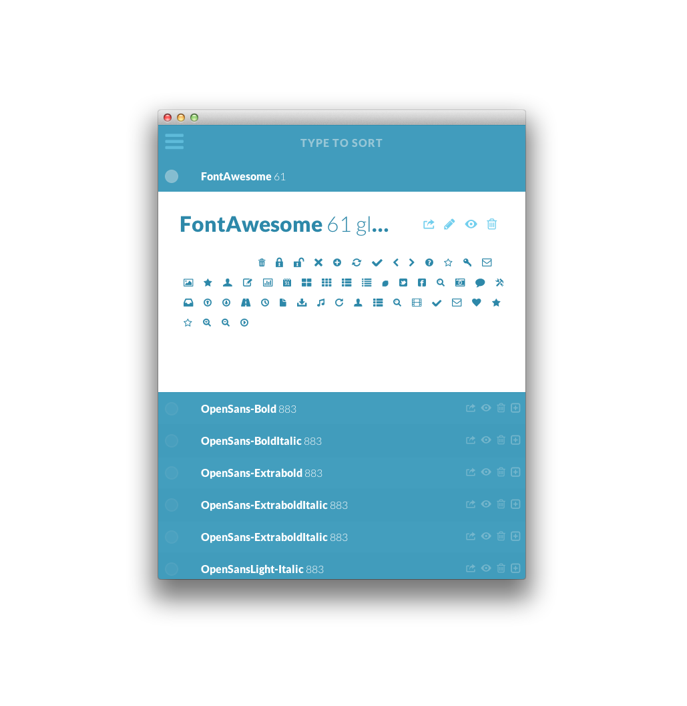
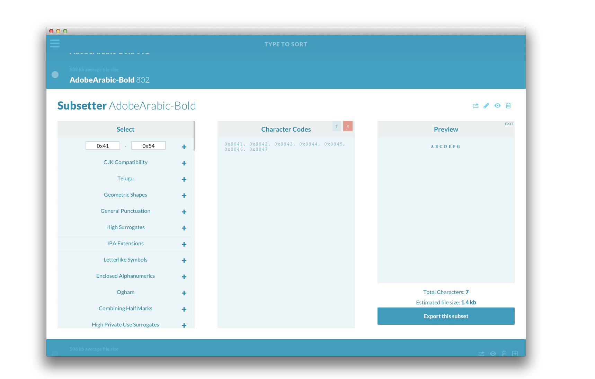
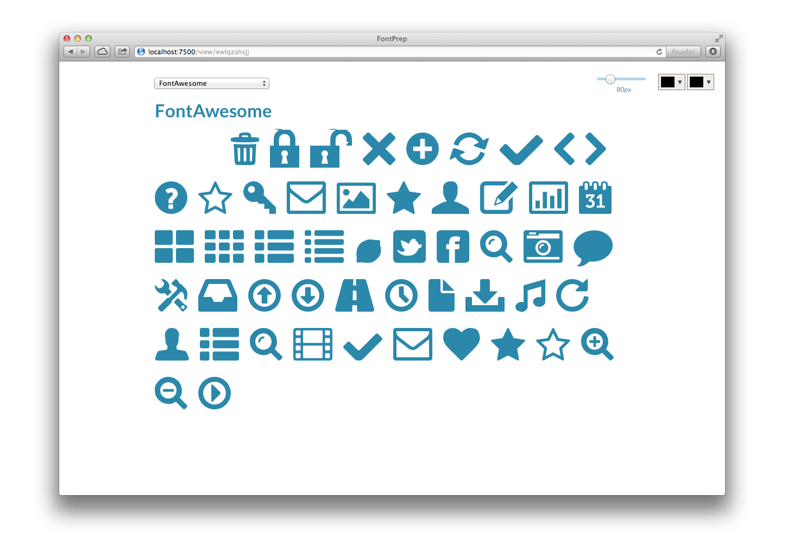
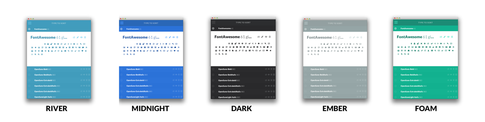

What's new in FontPrep v2?
We’ve been working hard over the past month or so completely rewriting FontPrep, and we’re very pleased to announce that it’s finally ready for you! If you just want it, well then go get it.
All new user interface
FontPrep has been completely redesigned, with flatness and speed in mind. You can now view fonts from directly within the app, and copy glyphs to your clipboard with ease.

Subsetter
After much demand, we’re pleased to announce that FontPrep now has a built-in subsetter. FontPrep allows you to take a font with thousands of characters and create a font with 1, 10, 67, 100, or however many glyphs you need. With the subsetter, you can extract a certain character set like Latin or Cyryllic, or you can create your own custom range. Check out a video demoing the subsetter. 
Enhanced export options
Now you can export webfont packs (which consist of custom CSS and just the right font files), custom subsets, TTF files, OTF files, WOFF, EOT, SVG, and CSS. You can also extract all of the glyphs within a font in SVG form, which is great for playing and experimenting with your favorite vector editor, like Adobe Illustrator. Check out this video, which demos exporting.
Brand new in-browser viewer
FontPrep now has a brand new in-browser viewer, allowing you to test and view your fonts in browsers from IE6 all of the way to Chromium. Check out a demo video here.

Themes
We realize that not everyone likes to rock the same RGBAs on their desktop, so we’ve created 5 custom themes (with more to come!) for you to show off your personality.

Completely Offline
Previous versions of FontPrep sent off font files to the cloud for processing, then sent them back to your computer, perfectly and flawlessly behind the scenes. FontPrep v2 removes that middle man, and does all of the processing right on your own machine. So whether you’re at home with blazingly fast internet, at Starbucks with snail Wifi, or on a plane with no connection, FontPrep is ready for the challenge.
Demo
Other videos
View other FontPrep v2 demo videos on this YouTube playlist.